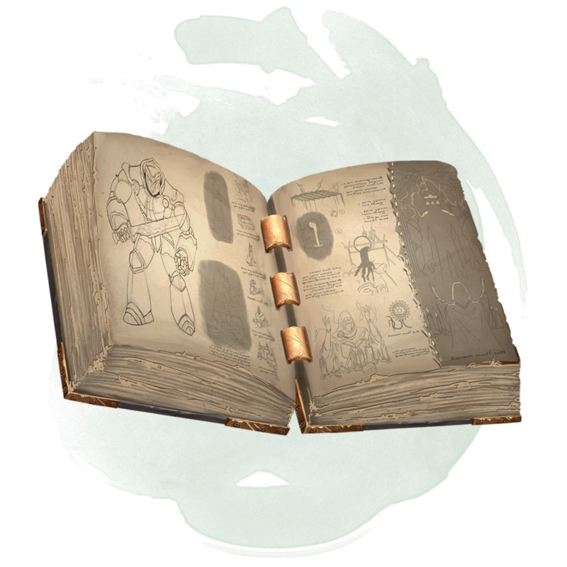

Manual of Golems
Wondrous item, very rare
This tome contains information and incantations necessary to make a particular type of golem. The DM chooses the type or determines it randomly. To decipher and use the manual, you must be a spellcaster with at least two 5th-level spell slots. A creature that can't use a manual of golems and attempts to read it takes 6d6 psychic damage.
To create a golem, you must spend the time shown on the table, working without interruption with the manual at hand and resting no more than 8 hours per day. You must also pay the specified cost to purchase supplies.
Once you finish creating the golem, the book is consumed in eldritch flames. The golem becomes animate when the ashes of the manual are sprinkled on it. It is under your control, and it understands and obeys your spoken commands.
| d20 | Golem | Time | Cost |
|---|---|---|---|
| 1-5 | Clay | 30 days | 65,000 gp |
| 6-17 | Flesh | 60 days | 50,000 gp |
| 18 | Iron | 120 days | 100,000 gp |
| 19-20 | Stone | 90 days | 80,000 gp |
To create a golem, you must spend the time shown on the table, working without interruption with the manual at hand and resting no more than 8 hours per day. You must also pay the specified cost to purchase supplies.
Once you finish creating the golem, the book is consumed in eldritch flames. The golem becomes animate when the ashes of the manual are sprinkled on it. It is under your control, and it understands and obeys your spoken commands.
Dungeon Master´s Guide (SRD)
